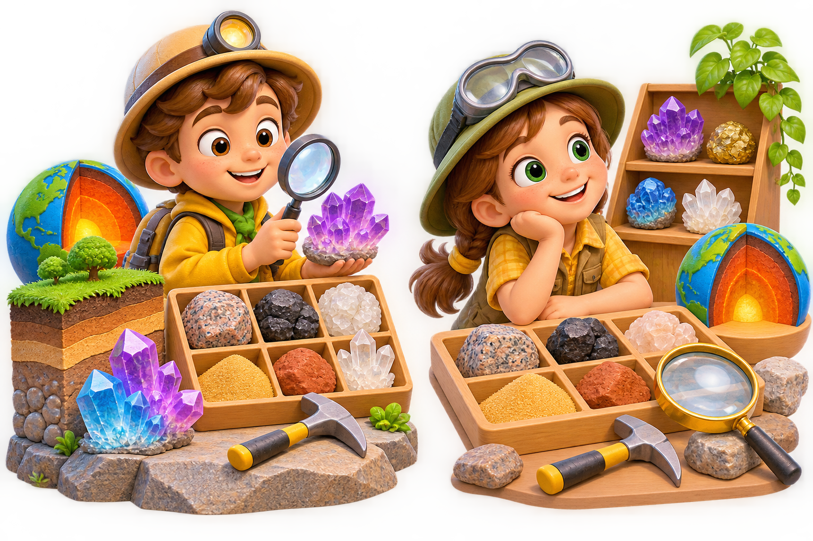

Гірські породи.
Корисні копалини
Сьогодні Ви станете геологами: дослідите скарби Землі, розгадаєте їхні таємниці й створите власну колекцію відкриттів!
🚀 Почати експедицію
🪨 Що приховує Земля?
Спершу висловіть припущення: чи всі гірські породи тверді?
📖 Відкрити коротке пояснення
Гірські породи — природні тіла неживої природи, що містяться в Землі або на її поверхні. Вони можуть бути твердими (граніт, кам'яне вугілля), рідкими (нафта) і газоподібними (природний газ). Корисні копалини — гірські породи, які люди видобувають і використовують.
🔬 Дослідіть зразки
Натискайте на зразки, розглядайте властивості. Знайдіть щонайменше чотири.
🧩 Розкладіть за станом
Перетягніть картки до відповідних скриньок або торкніться картки, а потім скриньки.
🌧️ Як утворюється пісок?
Оберіть, що впливатиме на скелю. Подивіться, як із часом змінюється порода.
Це модель тривалого природного процесу, а не миттєве перетворення.
🗺️ Звідки беруться корисні копалини?
Оберіть природне середовище та відкрийте його таємницю.
💡 Знайдіть застосування
🌍 Як зберегти скарби Землі?
Позначте дії, які допомагають ощадливо використовувати природні ресурси.
✍️ Мій висновок
Для PDF відкриється вікно друку: оберіть «Зберегти як PDF». Ваші відповіді залишаються на пристрої.
🏅 Експедицію завершено!
Ви вмієте розпізнавати гірські породи, пояснювати їхнє походження та берегти природні багатства.